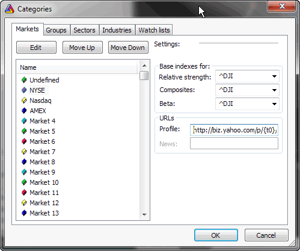

This dialog allows you to define names of markets, groups, sectors, and industries. For each market you can also define base indexes for calculating relative strength, composite data, beta, or web profile URL. Detailed information about categories can be found in Understanding categories chapter of this manual.
To edit the name of a certain category, please select it from the list and press 'Edit' button.
Base indexes for fields allow you to set the index used in calculation of:
Profile field allows you to define URL-template for viewing online (or offline) companies' profiles. These URL-templates are market-based, which means you can have different templates for each market. The template is then parsed to create the actual URL to the web page, which will be displayed in an embedded web browser. To learn more, read How to set up the profile view chapter.
Rearranging categories
AmiBroker version 6.10 added ability to rearrange the order of markets/groups/sectors/industries and watchlists using "Move Up" / "Move Down" buttons. This is a non-trivial task as all symbols must be synchronized with the change as when the ordering of categories changes then all symbol data must be re-indexed to reflect the new order as symbols refer to the ordinal position of a category.